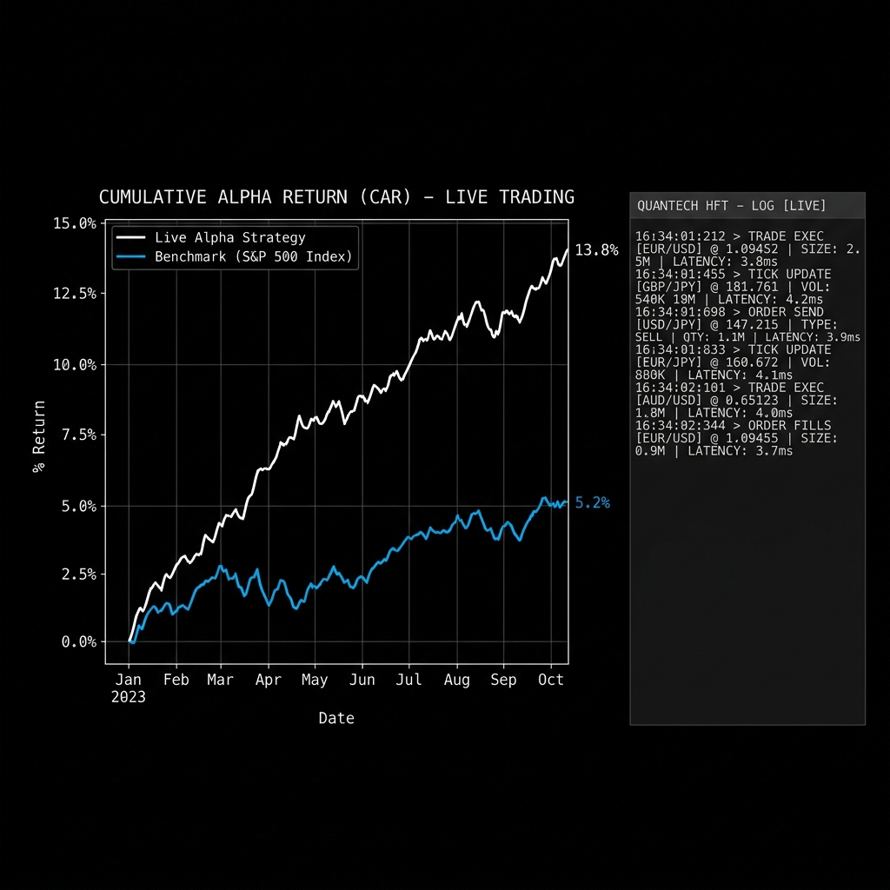
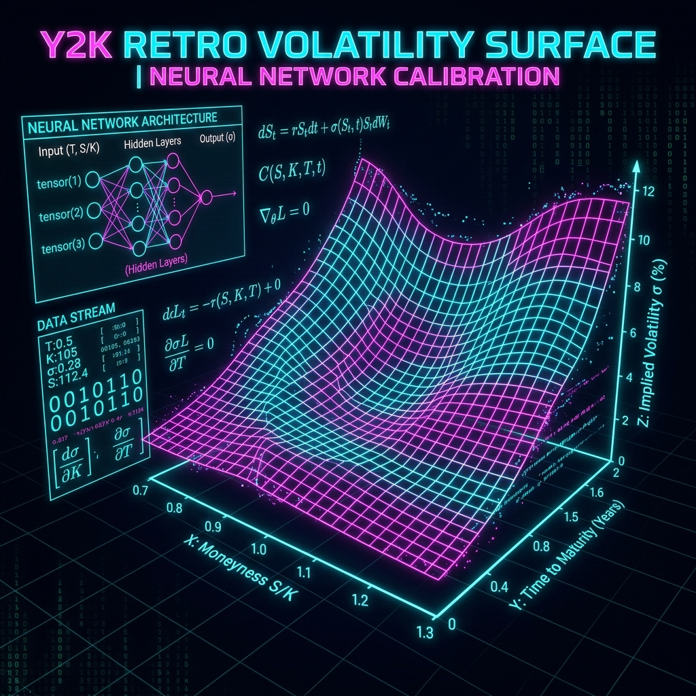
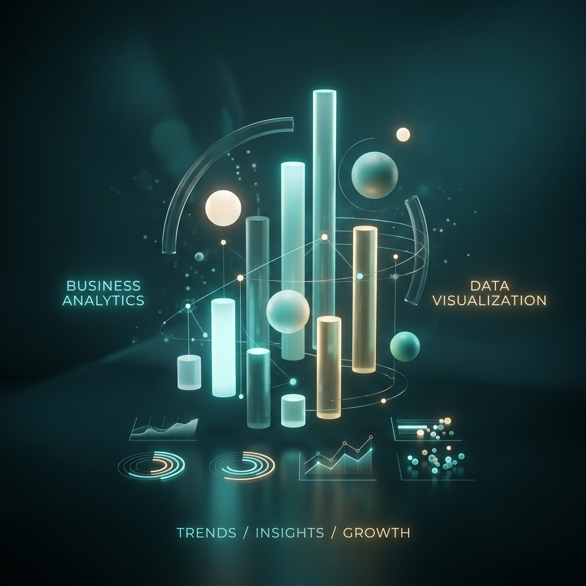
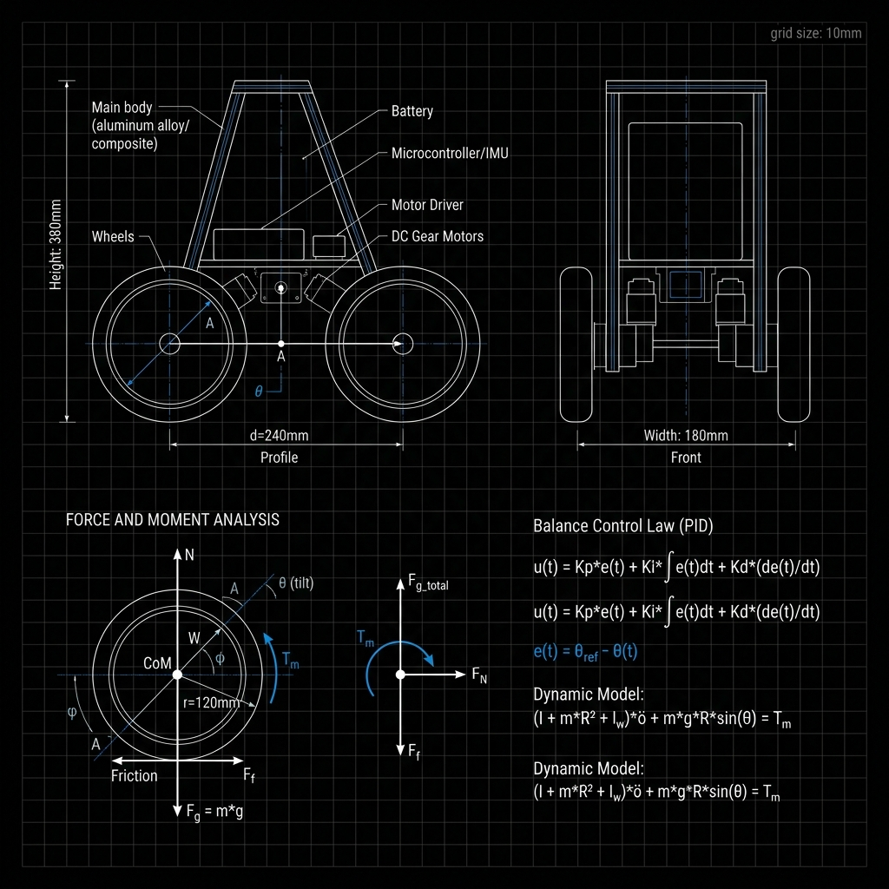
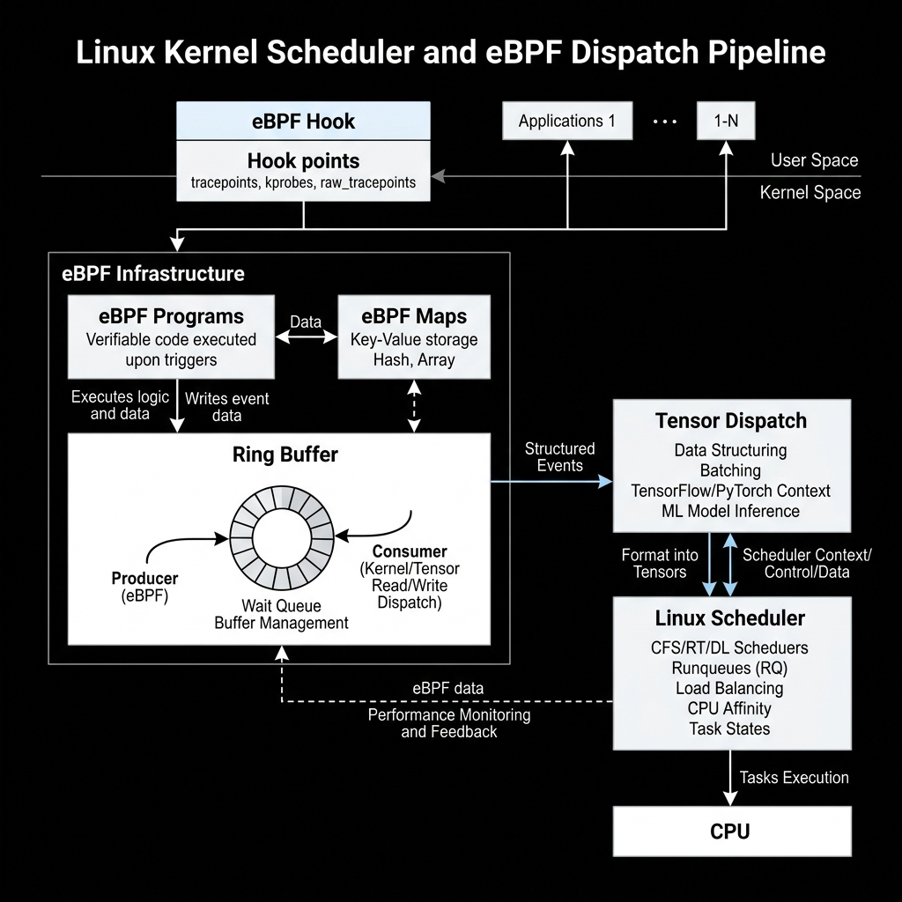

— building things at the edge of math and machines.
3rd year CS student, drawn to distributed systems,
quantitative finance, and the quiet beauty of mathematics.
Currently working at the intersection of ML and the Linux kernel.
Engineering across quantitative finance, distributed systems, ML, and hardware. Click any card to see the code.

Quant Finance · Nov 2025 – present
Real-Time FX Arbitrage Detection
Arbitrage across 20 currency pairs via Bellman-Ford cycle detection and Deep Q-Networks. 50 K+ ticks/sec, <5 ms latency. 147 bps monthly alpha, 82% fill rate. AWS + Docker + Jenkins CI/CD.
KafkaRedisPyTorchAWS

ML · Quant · Jan 2026 – present
Neural SDE Volatility Surface Model
Derivatives pricing using Neural SDEs on 20 years of options data — 23% better fit than Black-Scholes with no-arbitrage constraints. FastAPI live endpoints, Streamlit dashboard, MATLAB numerical validation.
PyTorchFastAPIPostgreSQLMATLAB
Data Engineering · Dec 2025 – present
Distributed Backtest Engine
10 K+ strategy variants across 15 years of data via Ray + Dask. Momentum, mean-reversion, stat-arb with grid search. LLM-assisted strategy generation. 50 concurrent jobs in under 2 hours.
RayDaskFastAPILLMs

Analytics · Jan 2026 – present
Interactive BI Dashboard
End-to-end pipeline integrating 5+ data sources via Azure Data Factory. 30+ custom DAX measures — rolling averages, YoY growth, cohort analysis. Star schema + Power Query; 40% load-time reduction.
Power BIDAXAzureSQL

Hardware · Embedded · Aug 2025
Self-Balancing Robot
Autonomous robot with PID control and IMU sensor fusion for real-time stabilisation. Custom PCB designed in KiCad / Proteus. 3D rigid-body dynamics visualised in OpenGL for simulation and tuning.
ArduinoC++OpenGLKiCad
Full-stack · AI/LLM
NyayBandhu Platform
AI-powered platform simplifying access to legal and social welfare resources for underserved communities. Combines LLMs with civic data APIs and multi-language support.
ReactTypeScriptLangChainFastAPI
//research.md
Research
Exploring where mathematics meets systems and where systems meet intelligence.
Active
Machine Learning × Linux Kernel
Investigating how ML inference workloads can be made faster through kernel-level primitives — studying custom Linux schedulers, eBPF hooks for tensor dispatch, memory-mapped I/O patterns for GPU buffers, and kernel-bypass networking to reduce latency in distributed training. The core question: how much of PyTorch's overhead lives in the kernel, and can it be systematically removed?

Linux KerneleBPFCPyTorchCUDASystems ML
Active
Stochastic Processes & Computational Complexity
Authoring a research paper at the intersection of probability theory and theoretical computer science. The work studies a class of stochastic processes whose expected complexity under random input distributions deviates from worst-case bounds — with implications for the analysis of randomised algorithms and Monte Carlo methods in financial simulation.
Stochastic ProcessesProbability TheoryRandomised AlgorithmsMonte Carlo
Exploratory
Neuromorphic Systems & Spiking Networks
Researching Spiking Neural Networks (SNNs) and their potential for energy-efficient AI — temporal coding schemes, STDP learning rules, and the gap between biological and artificial neural dynamics.
Particularly interested in roles involving quantitative research, distributed systems, ML infrastructure, or systems programming. Based in Kota, Rajasthan — open to remote and on-site opportunities.
Reach out via LinkedIn with the role and team details. I respond within 48 hours.